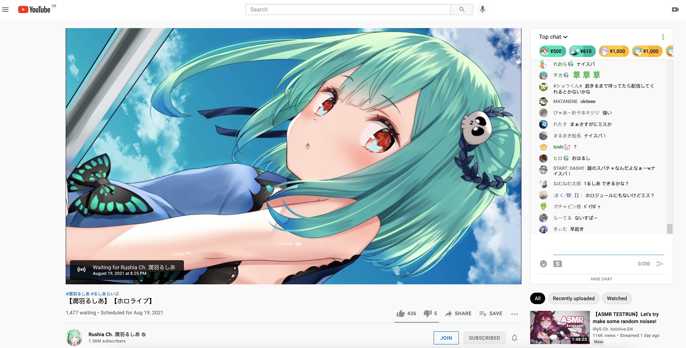

Chaty
最近经常跟一位挚友聊超久的天，从电视剧聊到各种话题。像是同桌的时候在下面讲悄悄话一样，各种聊天和吐槽。常常不知不觉间就聊了超过4、5个小时，云同桌的感觉也不错呢～不知道可以持续多久，但是希望能尽可能久呢。能有这样一个陪着的人还是很难的，至少现在来说的话，确实也算是各种意义上的精神支柱吧。如果……如果未来某一天这个人渐渐离开了我的生活中的话，肯定会很伤心啦，但是也只能一个人默默走下去了。
Life is hard.
又或者，其中一方有了 parnter 的话，大概会出于避嫌的原因变远吧。我喜欢她吗？是的吧，要不然为什么会聊这么久呢。再加上真的很长时间的很多回忆……期待会有人可以跟我一起在年老的时候能一起回忆各种黑历史吧（虽然首先要自己能活到那个时候）。至少目前来讲，觉得这样的事情还是很浪漫的。希望在那个时候还有保持联系。以后会变成什么样，真的很难说。
愿我们都能实现自己的愿望，过上想要的生活吧。Will it be hard? Yes, for sure. Will we compromise? Maybe. This is real life instead of a fairy tale, although I wish it was, I really do.
Vtuber
这两三个月也跟了不少 vtuber 的直播配信，惊讶地发现自己能听懂快一半的日语了。只是能这样悠闲看直播的时间也不多了。等到开始工作有了收入之后，大概剩下的时间就只能靠剪辑的精华了吧。不论 vtuber 这个行业以后的走向如何，我都希望这些 vtuber 们可以过得更好吧。
有钱不是生活幸福的充分条件，但是否是必要条件呢，多数时候，不得不说的确是一个必要条件。跟挚友聊天的时候也有讨论过要是我们很有钱该多好，可以自己真正静下心来做自己想做的事。现在的我们毫无疑问的被基本生活所需的金钱捆绑着。想学习 keyboard、C4D 建模，做自己的 side-project？一旦开始工作，这样的自我提升的时间就瞬间缩水了，下班之后也都未必想再去做这些事情了。这大概也是其中之一为什么大人们工作以后就少有学习新的技能的原因吧。
如果可能的话，我也会想要试着做一下 vtuber。但是这的确是很难的事情，个人势要火起来并且盈利太不容易了。何况按照经验来看，男性 vtuber 的观众基数也确实是要少的，甚至少很多。还是考虑别的职业好了。
最后附上今天逊逊的 るしあ 吧，直播设定错了时间，最后有超过 25k 人在线观看黑屏直播（inside 露酱的电冰箱）
